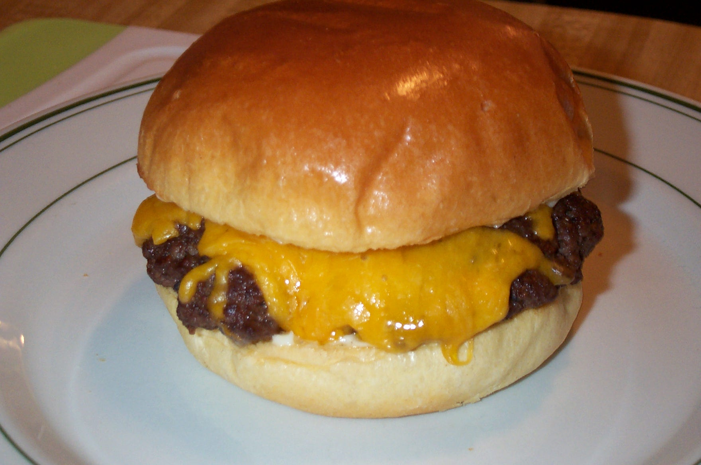

Hamburger

Burgers are one of the most iconic food's in the America's, found at almost every corner
and fast food business. Plus a great food to make with mostly little work, you're going
to need:
- 1KG Ground Beef
- Hamburger Buns
- Sliced Cheese
- Salt and Pepper
Instructions
- Prepare the patties: Divide the ground beef into 4 equal portions. Gently roll each portion into a ball, then flatten them into patties. Aim for a thickness of about ¾ inch to prevent overcooking.
- Season the patties: Season both sides of the patties with salt and pepper.
- Preheat the pan: Heat a skillet over medium-high heat. Add a drizzle of cooking oil if needed.
- Cook the patties: Add the patties to the preheated pan. Cook for 3-5 minutes per side, or until browned and cooked through (internal temperature reaches 160°F).
- Optional: Toast the buns: While the patties cook, briefly toast the buns in a toaster or pan for a warm and slightly crispy texture.
- Assemble the burger: Place a cooked patty on the bottom bun. Add your desired toppings (cheese, lettuce, tomato, onion, etc.). Top with the other half of the bun and enjoy!
Index